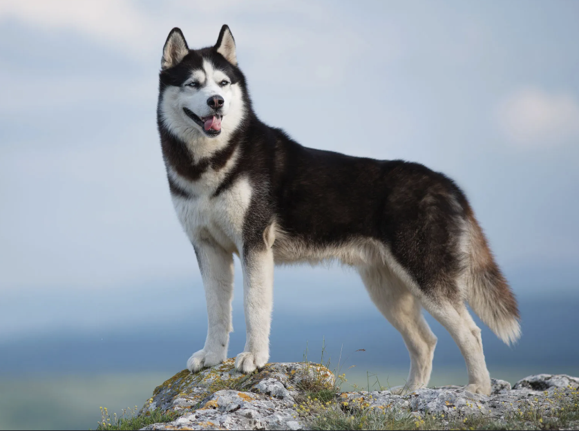
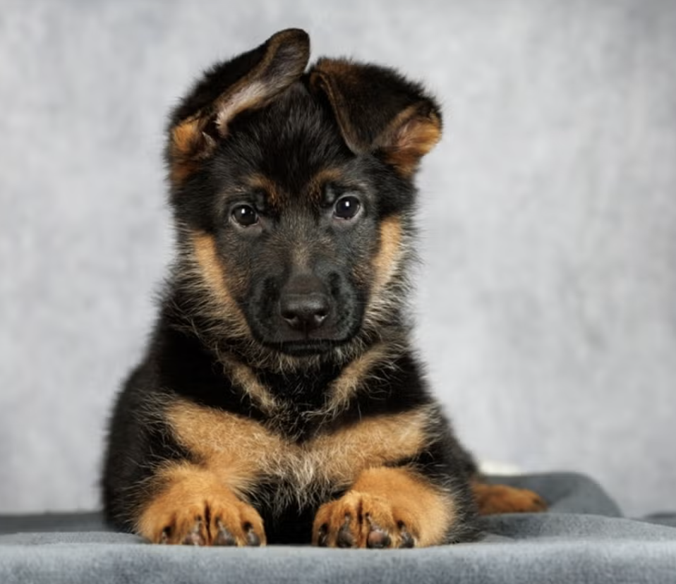

On this page you will be seeing a few of different dog breeds, including some of the most popular family dogs. You will be able to look at pictures of each breed and learn a little about their personality, size, and what makes them unique.
Image by: DogTime
Golden Retrievers are friendly, gentle, and very loyal dogs. They are known for being one of the best family pets because they are patient, calm, and good with children. They are also very intelligent, which makes them easy to train. Golden Retrievers love to play, swim, and spend time with their owners, making them very social and loving companions.

Photo by: Britannica
Huskies are energetic, strong, and independent dogs that were originally bred to pull sleds in cold climates. They are known for their thick fur, striking eyes, and playful personality. Huskies need a lot of exercise and enjoy running and exploring. While they are friendly, they can also be a little stubborn, so they need patient training and active owners.

Photo by: PetHelpful
German Shepherds are intelligent, loyal, and highly protective dogs. They are often used as police dogs, service dogs, and search-and-rescue dogs because of their ability to learn quickly and follow commands. They are very brave and form strong bonds with their owners. German Shepherds need regular exercise and training because they are active dogs that enjoy having a job or purpose.